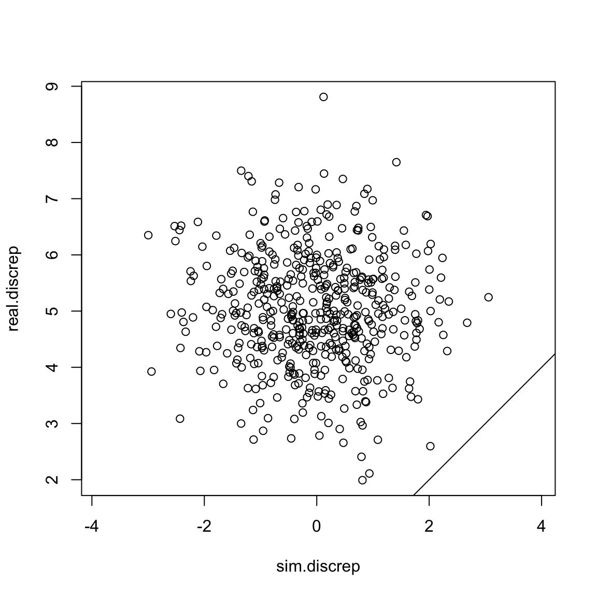
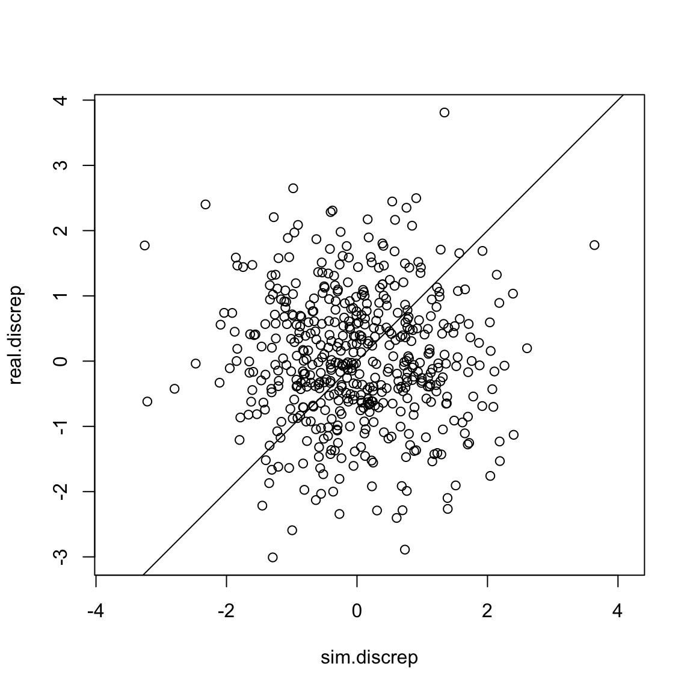
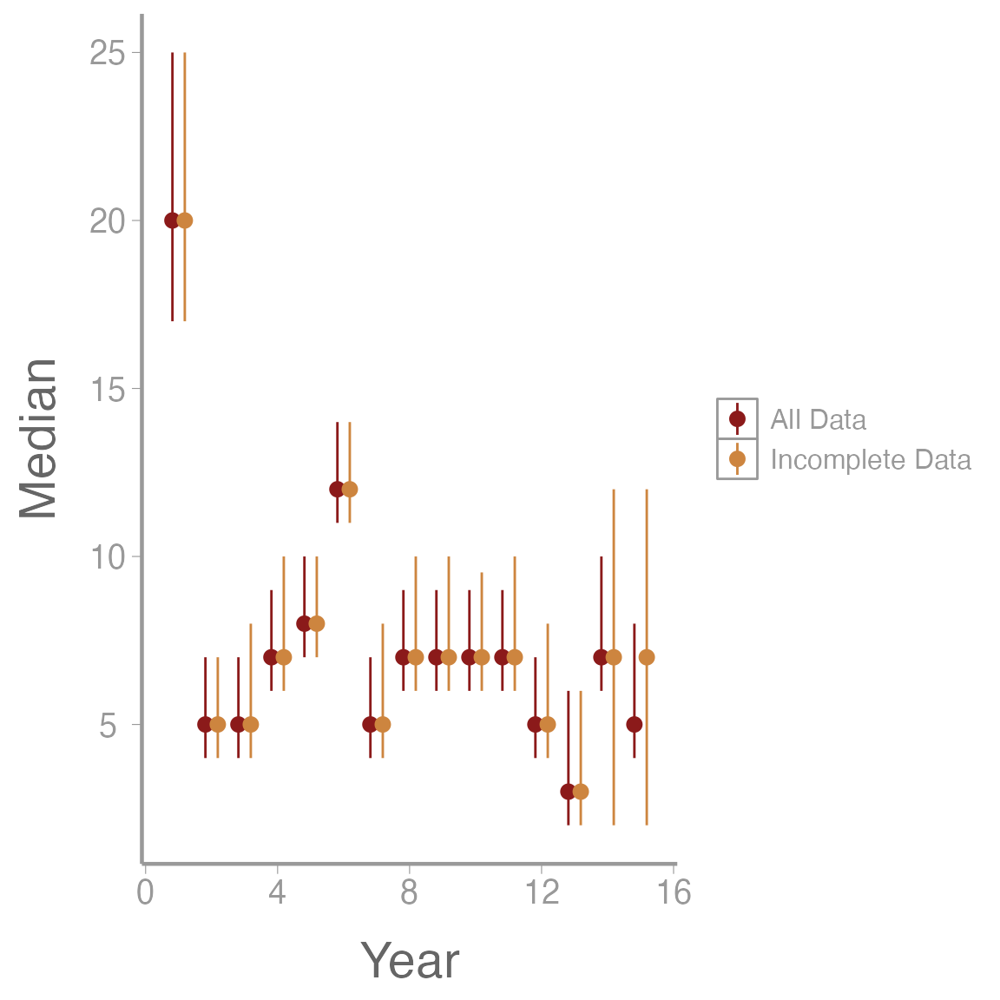

Lab7: Goodness of Fit
Lab7_GOF.RmdIn this activity we’ll learn a few metrics for assessing model fit in a Bayesian framework. We’ll also look at our model’s predictive abilities by removing some observation points and assessing the difference in the predicted values of latent variables.
Objectives
Assess our models for goodness of fit using posterior predictive checks and Bayesian p-values
Review occupancy and N-mixture models
What is Goodness of Fit?
Goodness-of-fit assessment is a key for the assessment of assumption violations in a model.
It is an excellent tool for:
Identifying glaring flaws in our model
Testing if model assumptions are being met
Double checking that the model is doing what we think it’s doing
Goodness of Fit does NOT tell us:
If our model is the best available model for our data
If we made a coding error
If there is a small violation of model assumptions
Bayesian p-values
The basic idea of a posterior predictive check is to see if the data we fit to the model can be predicted by the model we fit. This is similar (but not identical) to the maximum likelihood approach of boostrapping.
When a model fits the observed data adequately (i.e., when the underlying model assumptions are met sufficiently well) it should be possible to generate, by simulation, a new replicate data set using the model structure and estimated parameters similar to those of the observed data set.
Posterior predictive checks compute one or more discrepancy measures from observed and replicate data sets. The general method is usually:
Simulate new data from the fit model.
Calculate a discrepancy measure between the observed data and the expected value from the process model.
Calculate a discrepancy measure between the simulated data and the expected value from the process model.
Calculate the proportion of data points where the observed data’s discrepancy value was more extreme than the simulated data’s discrepancy value. This proportion is called a Bayesian p-value.
A Simple Example:
Let’s imagine an extremely simple example where we model the weight of birds at 500 sites in our study area as a random variable with a normal distribution. Our data says the observed abundances were:
After we fit the model, we have a posterior estimate of \mu = 45 and \sigma = 1. We’re kind of suspicious of that mean estimate, so we simulate some data from Normal(5, 1) and calculate the average discrepancy of the simulated results from the expected value (5). If they were both from the same distribution, we’d expect the correlation between their values to be about 1:
fakedat <- rnorm(500, mean = 45, sd = 1)
sim.discrep <- fakedat-45
real.discrep <- abundance - 45
plot(sim.discrep, real.discrep, asp =1)
abline(a =0, b=1) Uh oh! Our simulated discrepancy value was greater than our real data’s discrepancy 100% of the time! That’s a sign that our model is probably not very good.
What does this look like if we had a perfect model? Let’s see:
fakedat <- rnorm(500, mean = 50, sd = 1)
sim.discrep <- fakedat-50
real.discrep <- abundance - 50
plot(sim.discrep, real.discrep, asp =1)
abline(a =0, b=1) Nice!
Discrepancy Measures in Nimble
Obviously our examples in real life are going to be a bit more complicated. Let’s take an example from lecture this week and see how we would implement this in Nimble if we were looking at an N-mixture model.
Before we begin, it’s important to note that there are many ways to calculate discrepancy. No one way is necessarily better than the others. Here are 2 common options:
Compare the raw residuals: y - E(y)
Use Pearson’s residuals (y - E(y))^2/var(E(y))
We’ll implement both in our model, just to see how they work.
Here’s the hare model we looked at in Lab 6. As a reminder, the full data contain replicated counts of Brown hares from 1992-2008 at 56 sites in 8 regions of Switzerland. We chose to model the hares in just one region, the Central region. This reduces our data to 7 study sites.
hare_mod <- nimbleCode({
for(i in 1:nsites){
for(t in 1:nyears){
#Process model
log(lambda[i,t]) <- beta1[landuse[i]] + beta2*site_area[i]
N[i,t] ~ dpois(lambda[i,t])
for(k in 1:2){
#observation model
y[i,t,k] ~ dbinom(size = N[i,t],p =p[i]*effort[i,t,k])
} #end k
} #end t
logit(p[i]) <- alpha[site[i]]
}
#priors:
beta2 ~ dnorm(0, 1)
for(m in 1:nlandtypes){
beta1[m] ~ dnorm(0, 1)
}
for(j in 1:nsites){
alpha[j] ~ dnorm(0, sd = sd.site)
}
sd.site ~ dexp(3)
})Our data is y, the number of hares seen during each survey.
For convenience, here’s the relevant line:
y[i,t,k] ~ dbinom(size = N[i,t],p =p[i]*effort[i,t,k])Our first step is to simulate new observation data inside the model.
y[i,t,k] ~ dbinom(size = N[i,t],p =p[i]*effort[i,t,k])
y.new[i,t,k] ~ dbinom(size = N[i,t],p =p[i]*effort[i,t,k])Now we can calculate our various discrepancy measures.
Compare the raw residuals
First option is to compare the raw residuals. That’s the easiest and my personal favorite. To do this, we subtract y and y.new from the expected value of our binomial (N*p):
y[i,t,k] ~ dbinom(size = N[i,t],p =p[i]*effort[i,t,k])
y.new[i,t,k] ~ dbinom(size = N[i,t],p =p[i]*effort[i,t,k])
y.res[i,t,k] <- y[i,t,k] - (N[i,t]*p.det*effort[i,t,k]) #residual
y.res.new[i,t,k] <- y.new[i,t,k] - (N[i,t]*p.det*effort[i,t,k]) #predicted residualThe bayesian p-value is then the proportion of observations for which y.res > y.res.new. We want this value to be between 0.3 and 0.7. Much like maximum likelihood ‘p-values’, the cutoffs here are somewhat arbitrary.
Note that nimble gets cranky if we try to sum over more than 2 dimensions at once. We could either split up the sums or get a result for each year. For this model, we might as well just calculate a p-value for each site, so we can identify if some sites are noticeably worse fitting than others.
y[i,t,k] ~ dbinom(size = N[i,t],p =p[i]*effort[i,t,k])
y.new[i,t,k] ~ dbinom(size = N[i,t],p =p[i]*effort[i,t,k])
y.res[i,t,k] <- y[i,t,k] - (N[i,t]*p[i]*effort[i,t,k]) #residual
y.res.new[i,t,k] <- y.new[i,t,k] - (N[i,t]*p[i]*effort[i,t,k]) #predicted residual
y.res.dif[i,t,k] <- y.res[i,t,k] - y.res.new[i,t,k]
}} #end k and t
p.val1[i] <- mean(y.res.dif[i,1:nyears,1:2] > 0)
}#end iPearson’s Residuals
Pearson’s residuals use the observation, the expected value and the variance of the expected value: (y - E(y))^2/var(E(y)).
The variance of a binomial is Np(1-p).
y[i,t,k] ~ dbinom(size = N[i,t],p =p[i]*effort[i,t,k])
y.new[i,t,k] ~ dbinom(size = N[i,t],p =p[i]*effort[i,t,k])
y.pear[i,t,k] <- (y[i,t,k] - N[i,t]*p[i]*effort[i,t,k])^2/
(N[i,t]*(p[i]*effort[i,t,k])*(1-*p[i]*effort[i,t,k]))
y.pear.new[i,t,k] <- (y.new[i,t,k] - N[i,t]*p[i]*effort[i,t,k])^2/
(N[i,t]*(p[i]*effort[i,t,k])*(1-*p[i]*effort[i,t,k]))
y.pear.dif[i,t,k] <- y.pear[i,t,k] - y.pear.new[i,t,k]
}} #end k and t
p.val2[i] <- mean(y.pear.dif[i,1:nyears,1:2] > 0)That looks gross, but at least we don’t have to calculate it by hand!
Let’s run the model and monitor p.val1 and
p.val2.
Run the model
For convenience, all the data cleanup we did in lecture is saved as an object in the WILD8370 package.
data(Lab7hares)We just need to monitor the parameters of interest
(p.val1 and p.val2), add in initial values for
y.new and we’re good to go.
Lab7hares$inits$y.new <- Lab7hares$dat$yHere’s the full model:
hare_mod <- nimbleCode({
for(i in 1:nsites){
for(t in 1:nyears){
#Process model
log(lambda[i,t]) <- beta1[landuse[i]] + beta2*site_area[i]
N[i,t] ~ dpois(lambda[i,t])
for(k in 1:2){
#observation model
y[i,t,k] ~ dbinom(size = N[i,t],p =p[i]*effort[i,t,k])
y.new[i,t,k] ~ dbinom(size = N[i,t],p =p[i]*effort[i,t,k])
y.res[i,t,k] <- y[i,t,k] - (N[i,t]*p[i]*effort[i,t,k]) #residual
y.res.new[i,t,k] <- y.new[i,t,k] - (N[i,t]*p[i]*effort[i,t,k]) #predicted residual
y.res.dif[i,t,k] <- y.res[i,t,k] - y.res.new[i,t,k]
y.pear[i,t,k] <- (y[i,t,k] - N[i,t]*p[i]*effort[i,t,k])^2/
(N[i,t]*(p[i]*effort[i,t,k])*(1-p[i]*effort[i,t,k])) #residual
y.pear.new[i,t,k] <- (y.new[i,t,k] - N[i,t]*p[i]*effort[i,t,k])^2/
(N[i,t]*(p[i]*effort[i,t,k])*(1-p[i]*effort[i,t,k])) #predicted residual
y.pear.dif[i,t,k] <- y.pear[i,t,k] - y.pear.new[i,t,k]
} #end k
} #end t
p.val1[i] <- mean(y.res.dif[i,1:nyears,1:2] > 0)
p.val2[i] <- mean(y.pear.dif[i,1:nyears,1:2] > 0)
logit(p[i]) <- alpha[site[i]]
}
#priors:
beta2 ~ dnorm(0, 1)
for(m in 1:nlandtypes){
beta1[m] ~ dnorm(0, 1)
}
for(j in 1:nsites){
alpha[j] ~ dnorm(0, sd = sd.site)
}
sd.site ~ dexp(3)
})
params <- c('p.val1', 'p.val2')
ni <- Lab7hares$inits
nd <- Lab7hares$dat
nc <- Lab7hares$consts
library(parallel)
cl <- makeCluster(3) #each chain will be run separately
clusterExport(cl = cl, varlist = c("ni", "nc", 'nd', "hare_mod", 'params'))
hares.out <- clusterEvalQ(cl = cl,{
library(nimble) #reload packages for each core
library(coda)
prepnim <- nimbleModel(code = hare_mod, constants = nc,
data = nd, inits = ni, calculate = T)
prepnim$initializeInfo() #will tell you what is or isn't initialized
prepnim$calculate() #if this is NA or -Inf you know it's gone wrong
mcmcnim <- configureMCMC(prepnim, monitors = params, print = T)
nimMCMC <- buildMCMC(mcmcnim) #actually build the code for those samplers
Cmodel <- compileNimble(prepnim) #compiling the model itself in C++;
Compnim <- compileNimble(nimMCMC, project = prepnim) # compile the samplers next
Compnim$run(niter = 50000, nburnin = 25000, thin = 1)
res <- (as.mcmc(as.matrix(Compnim$mvSamples)))
return(res)
}) #this will take awhile and not produce any progress bar
hares.out <- as.mcmc.list(hares.out)
stopCluster(cl)Check Output
What did we find?
summary(hares.out)$quantiles
#> 2.5% 25% 50% 75% 97.5%
#> p.val1[1] 0.2059 0.2941 0.3235 0.3824 0.4706
#> p.val1[2] 0.2059 0.2941 0.3529 0.4118 0.5000
#> p.val1[3] 0.2353 0.3235 0.3824 0.4118 0.5000
#> p.val1[4] 0.1471 0.2059 0.2353 0.2647 0.3235
#> p.val1[5] 0.2941 0.3824 0.4412 0.5000 0.5882
#> p.val1[6] 0.1765 0.2353 0.2941 0.3235 0.4118
#> p.val1[7] 0.1471 0.2059 0.2353 0.2941 0.3529
#> p.val2[1] 0.2647 0.3529 0.4118 0.4706 0.5588
#> p.val2[2] 0.2941 0.3529 0.4118 0.4412 0.5294
#> p.val2[3] 0.3529 0.4412 0.4706 0.5294 0.5882
#> p.val2[4] 0.2647 0.3235 0.3529 0.4118 0.4706
#> p.val2[5] 0.4412 0.5294 0.5882 0.6176 0.7059
#> p.val2[6] 0.2647 0.3529 0.4118 0.4412 0.5294
#> p.val2[7] 0.1765 0.2647 0.2941 0.3235 0.4118According to our raw residuals (pval1), we can see that
the data from sites 4, 6 and 7 are potentially not fitting the model
very well. However none of the values are glaringly low, so this would
be more of a note in the discussion than a clear sign to throw out the
results.
For the p-value calculated using pearson residuals
(pval2), we can see that all the values look reasonable
except maybe for site 7.
Remember that p-values only tell us if there is an extreme error in our model or a glaring problem with the fit, but are not very sensitive to small violations.
Posterior Predictive Checks - Predictive Fit
We can also use posterior prediction to assess how good our model is at predicting future observations or assess the sensitivity of our predictions to subsets of our data. Usually you’ll want to run two checks - one for the observation model and one for a latent variable of interest.
The easiest way to implement these checks are as follows:
Run the model with all data and monitor the posterior of a latent variable of interest (usually N in an N-mixture model or z in an occupancy model).
Remove some of the data provided to the model.
Run the model on the trimmed data set and monitor the posterior of the latent variable from earlier. Also monitor the posterior for the data points that were removed.
Compare posterior estimates for the latent variable between model runs to estimate sensitivity of predictions. Compare the posterior estimate of the missing data to the observed data to evaluate the predictive ability of your observation model.
Predict Fit on Simulated Data
Let’s use some simulated dynamic occupancy data. We’ll pretend that gamma increases when percent forest is higher.
set.seed(55)
nyears <- 15
nsites <- 40
phi <- .8
forest <- runif(nsites, 0, .5)
gamma <- .1
psi1 <- .62
nvisits <- 4
p <- .4
z <- y <-array(NA, c(nsites, nyears))
z[,1] <- rbinom(nsites, 1, psi1)
for(i in 1:nsites){
y[i,1] <- rbinom(1, z[i,1]*nvisits, p)
for(t in 2:nyears){
z[i, t] <- rbinom(1, 1, z[i,t-1]*(1-phi)+(1-z[i,t-1])*(gamma+.2*forest[i]))
y[i, t] <- rbinom(1, z[i,t]*nvisits, p)
}
}Here’s the model we want to run. Note that we’re modeling \gamma as a constant, even though we simulated it as dependent on forest cover.
occ.mod <- nimbleCode({
for(i in 1:nsites){
z[i,1] ~dbern(psi)
y[i,1] ~dbinom(p, z[i,1]*nvisits)
for(t in 2:nyears){
z[i, t] ~dbern(z[i,t-1]*(1-phi)+(1-z[i,t-1])*gamma)
y[i, t] ~dbinom(p, z[i,t]*nvisits)
} #end t
} #end i
for(t in 1:nyears){
Tot.occ[t] <- sum(z[1:nsites,t])
}
gamma ~ dbeta(1, 1)
phi ~ dbeta(1, 1)
p ~ dbeta(1, 1)
psi ~ dbeta(1,1)
})To assess the sensitivity of our estimates of Total Occupancy, we’ll first run the model with all the data and then run the model with years 14 and 15 removed.
Run the model with full data
params <- c('Tot.occ')
n.c <- list(nsites = nsites, nvisits = nvisits, nyears = nyears)
n.d <- list(y =y)
z.init <- matrix(rbinom(nsites*nyears, 1, .5), ncol = nyears)
z.init[which(y > 0)] <- 1
n.i <- function()list(p = runif(1), gamma = runif(1), phi = runif(1), psi = runif(1), z =z.init)
occ_out1 <- nimbleMCMC(code = occ.mod,
data = n.d,
constants = n.c,
inits = n.i(),
monitors = params,
thin = 1,
niter = 5000,
nburnin = 2500,
nchains = 3,
samplesAsCodaMCMC = TRUE
)Excellent. Now let’s only give Nimble data for years 1 - 13 and see
how it fares. We also want to monitor the y parameter so
that we can look at our observation model.
Run the model with partial data
occ_out2 <- nimbleMCMC(code = occ.mod,
data = n.d2,
constants = n.c,
inits = n.i2(),
monitors = params,
thin = 1,
niter = 5000,
nburnin = 2500,
nchains = 3,
samplesAsCodaMCMC = TRUE
)Let’s start by comparing predictions in total occupancy. Remember that this is latent, so we don’t know the ‘right’ answer, but knowing how sensitive the model is to the amount of data can help us understand how useful this model will be for predicting future dynamics. ### Compare Total Occupancy
Tot_occ1 <- summary(occ_out1[,grep('Tot', colnames(occ_out1[[1]])),])$quantiles
Tot_occ2 <- summary(occ_out2[,grep('Tot', colnames(occ_out2[[1]])),])$quantiles
gg_tot <- data.frame(Median = c(Tot_occ1[,3], Tot_occ2[,3]),
LCI = c(Tot_occ1[,1], Tot_occ2[,1]),
UCI = c(Tot_occ1[,5], Tot_occ2[,5]),
Year = rep(1:15, 2),
Model = rep(c('All Data', 'Incomplete Data'), each = 15))
ggplot(gg_tot, aes(x = Year, y= Median, col = Model, group = Model))+
geom_pointrange(aes(ymin = LCI, ymax = UCI), position = position_dodge(width = .75))+
scale_color_manual(values = c('firebrick4', 'tan3'))
We can see that without the last 2 years of data our model predicts a slightly higher number of sites will be occupied, but the 95% credible intervals still overlap. However, I would probably be cautious about predicting my model out more than 2 years into the future.
Homework
Using the Central hares dataset we used above, analyze the data in a dynamic N-mixture model framework using the constant parameterization of the Dail-Madsen model. Do not put any covariates on \gamma or \phi and keep the same equation for \lambda in year 1 that was used for the \lambda in the lab example. Assess the goodness of fit using the raw residuals as a discrepancy meaure to calculate a Bayesian p-value. Does the goodness of fit test suggest any glaring issues with model fit?
Write out the mathematical equation for the model you used in Question 1. Include priors.
Using the simulated dynamic occupancy model, calculate a Bayesian p-value for each year of data. Does the goodness of fit test detect any issues? Use Pearson residuals to calculate the discrepancy.
On a 1-10 scale, with 1 being the worst week ever and 10 being the best, how would you rate this week’s content? What lingering questions/confusion about the lecture or lab do you still have?